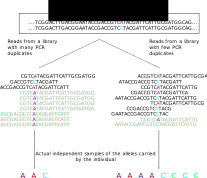

8 Sequence alignment and handling BAM files
Upon receiving next generation sequencing data (and when already in possession of a decent reference genome to which you can align those sequences), there are effectively three main phases of bioinformatic analysis. The first phase (Alignment) involves aligning or mapping the reads to the reference genome. This tells you which precise location in the genome each base pair in each sequencing read comes from. The second phase (Variant Calling) uses those mapped reads to identify genetic variation—and the genotypes of individuals—at different locations in the genome. In the final phase (Analysis) you bring the outputs of the first two phases to bear upon the questions you want to answer about the organism or system you are studying. The final phase is often the most interesting, and the one that requires the most understanding of population genetics in order to be conducted well and correctly. However, the first two phases are essential steps that must be undertaken to get to the “fun part.”
This chapter describes the tools used, and the steps taken, to produce aligned reads from raw sequencing data. The computer commands used to simply map reads to a reference are quite straightforward; however, right at the beginning of this phase of analysis, it is prudent to attach to each read some information about the journey that it took to finally arrive in your bioinformatics workflow. Such extra information about each sequencing read is called read group information. Read group information is used, for example, to combine all the reads from a single individual to call genotypes from that individual. Read group information can also be used to correct issues that occurred in the library preparation and the sequencing steps. Though a good understanding and a faithful recording of read group information is central to principled bioinformatic analysis, any cursory perusal of bioinformatics help sites like BioStars indicates that there is sustained and abiding confusion about the role and meaning of read groups. The first section of this chapter attempts to provide some background that we hope will alleviate such confusion for you.
Following that section, we cover the workings of bwa, a popular piece of software for performing alignments. Subsequent sections detail the use of samtools, for manipulating SAM and BAM files, and show ways to use samtools to prepare BAM files for variant calling. Finally, we wrap up this chapter with a description of the program bedtools, and how to use it to investigate the depth of reads aligning to different portions of the reference genome.
8.1 The Journey of each DNA Fragment from Organism to Sequencing Read
In Section @ref(get-seqs) we discussed one solution for downloading gzipped FASTQ files from a sequencing center. This turns out to be the last step in a very long process of acquiring sequencing data from a collection of organisms that you are studying. We could say that the DNA of each organism that you are studying took an extraordinary journey to get to you. This journey included, 1) you (or a colleague) sampling tissue or blood from that organism, 2) DNA being extracted from that tissue or blood, 3) that DNA getting Illumina adapters (with sample-specific barcodes) attached to it and then getting PCR amplified some number of times in the library preparation stage, 4) the products of the library preparations are sequenced, sometimes on multiple flow cells and often across multiple lanes, during the sequencing stage, 5) the sequencer processes the read data into FASTQ files, 6) finally, you download the data.
Anyone who has ever been involved in research knows that at every stage of the above process there are opportunities for errors or biases to occur that could affect the final data (and inferences) produced. The effects of some of the errors and biases that occur during the library prep stage and the sequencing stage can be eliminated or lessened. Doing so requires that we keep careful track of the route that each read took during those those steps in its journey. This is the role of read groups, which we discuss below. For now, however, we will offer that the main errors/effects that can be controlled for by careful accounting of reads into read groups are: 1) controlling for effects on the reported base quality scores of the particular flowcell or the particular lane on a flowcell that a read was sequenced on; 2) The identification of sequencing reads which are PCR duplicates of another read in the data set. Thus, most of the focus on defining read groups is concerned with identifying features of a read’s journey that can be used to ameliorate those two types of errors/biases.
The process of controlling for batch effects of flowcells and lanes on base quality scores is called, unsurprisingly, Base Quality Score recalibration. This might be discussed in a later section. It is a very important process when one is searching for de novo mutations, or otherwise attempting to very accurately identify variants that occur at very low frequency. Doing base quality score recalibration is considered a “best practice” when using GATK (Section XX), but I have my doubts as to whether it will make appreciable differences in analyses where the importance of rare variants is downweighted. Nonetheless, whether you are going to do base quality score recalibration or not, you should certainly prepare your data so that you can do it should you decide to. In order to do it, you must know which flowcell and upon which lane each read was sequenced. That information can be found in the FASTQ file as part of the name for each sequence, however, methods for doing base quality score recalibration do not typically use the names of the reads to access that information. Rather it must be stored in the read group information.
A PCR duplicate is a template sequence that happens to be a copy (made by PCR) of another sequence that has also been sequenced. They are considered “errors” in bioinformatics, because many of the models for inferring genotypes from next generation sequencing data assume a process of independent sampling of gene copies (i.e. the maternal and paternal copies of a choromosome) within a diploid individual, and that model and the data are used to estimate how likely an individual is a homozygote versus a heterozygote at each position. For example, if Individual X produces one read covering position Y—a position known to be a variable SNP with alleles A and G in the species—and the read carries an A at position Y, then you would conclude that Individual X likely has genotype AA or AG at position Y, and is less likely to have genotype GG, because our observed read with an A at that position would have only occurred because of a sequencing error in that case. If we saw 10 reads from individual X, and they all had the A base at position Y, however, we could be quite confident that the genotype is AA rather than AG, because if the indvidual had genotype AG, then each read should have a 50% chance of carrying an A and a 50% chance of carrying a G, and it is very unlikely, in that case, that all 10 would carry the A allele. However, imagine how your conclusions would change if someone were to tell you that 95% of the reads were PCR duplicates of another one of the reads. In that case, even if the individual has genotype AG, there is high probability that only a single, true template carrying an A came from the individual, and the remaining 9 reads that carry an A are just PCR copies of that first original template.
PCR duplicates are copies of the same template fragments. Therefore in paired-end data if a pair of reads maps to exactly the same location as another pair of reads, it is likely that one of them is a PCR duplicate of the other. Figure 8.1 provides a simplified schematic (with merely single-end data) describing a situation with high and low numbers of PCR duplicates. The PCR duplicate fragments are denoted with gray-colored flanking sequence. In the figure, note that the length of the fragments gives information about which fragments are duplicated and which are not—if two fragments of the same length are identified, then one of them is considered a PCR duplicate. It is worth noting that it isn’t (to my knowledge) really known which fragment is the duplicate and which is the “original,” but, in order to correct the situtation, one (or more of them) will be identified as duplicates, and one of them will be identified as an “original.”
PCR duplicates occur during the library prep stage, and also are only possible for fragments originating from the same individual sample. In other words, if you found two different paired-end reads that mapped to the same location in the genome, but they were from different individuals (i.e. had different sample-specific DNA barcodes), you would not suspect that they were PCR duplicates. Likewise, DNA fragments from two different library preps, even if they came from the same individual—in the case that DNA from that individual had been prepared in two separate libraries—would not be considered to be PCR duplicates. (We should pause here to note what is considered a “library prep.” Basically, if a batch of samples were all processed together in the same day with reagents from the same kit, that is considered a single “library prep.”) Accordingly, when keeping track of read groups for the purposes of identifying PCR duplicates, the most important information is which individuals the DNA came from and which library preparation it was prepared in.
What we can conclude from this section is that, for downstream analyses, we need a way to quickly (and efficiently, in terms of data storage space) identify, for each read the:
- Sample it originated from
- The library in which it was prepared for sequencing.
- The flowcell that it was sequenced on.
- The lane on that flowcell that it was sequenced on
This information can be strored in the alignment file using read group information as described below.
8.2 Read Groups
We previously touched briefly on read groups, noting that the SAM file header can contain lines like this one:
@RG ID:HTYYCBBXX.1.CH_plate1_A01 SM:CH_plate1_A01 LB:Lib-1 PU:HTYYCBBXX.1.TCAATCCG+TTCGCAGT PL:ILLUMINAThe purpose of this line is to identify a read group that is named via the ID tag. In the above case the read group is named HTYYCBBXX.1.CH_plate1_A01. The attributes of this read group are stored using the remaining tags in the @RG line. Happily, those attributes mirror exactly what we might need to know to identify PCR duplicates and to perform base quality score recalibration; namely:
SM: give the name of the sample,CH_plate1_A01, the read is from,LB: gives the name of the library prep,Lib-1, the read is from,PU: gives the name of the flowcell,HTYYCBBXX, and the lane,1, the read is from.
It is important to note that this line in the SAM header is just a header line that gives information about a particular read group that is found in the file. It is not, by itself giving you information about any particular read found in the alignment file. Read group information about a particular read in the alignment file is given on the alignment line in a column (way off near the end of the line typically) tagged with RG:Z. That RG:Z column in an alignment row simply holds the ID of the read group that the read belongs to. In this way, all the information that applies to the read—i.e., the sample it came from, (SM), the library prep it was in (LB), and information about the flowcell and lane (PU)—can be assigned to the read, without writing all of that information on every line in the alignment file. Accordingly, it should be obvious why the read group IDs must be unique across all the different read groups (@RG tags) in a SAM/BAM file: the ID is used to identify all the other information that goes along with that read, and is used to differentiate those different read groups!
You can download the first 100 lines (without the @SQ lines) of a SAM file that has 8 different read groups in it here. Let’s do that and have a look at it.
The way that read group information—particularly the platform unit, or PU information—is recorded is dictated by which software will be used for downstream processing. We describe the conventions that are useful for passing the aligned data to the Genome Analysis Toolkit (GATK), an extensive and well-supported piece of software developed by the Broad Institute. Currently, the GATK conventions for read group tags are these:
ID: any string that uniquely identifies a read group. The user must make sure that these uniquely identify the read groups. If you have multiple samples, libraries, flowcells, and lanes, and easy way to ensure this is to just bung those all together in a format like{Sample}.{Library}.{Flowcell}.{Lane}, where the parts in curly braces should be replaced by the actual names of those items. As long as there is aPUfield, however, you can make the ID anything you want, as long as it is unique for each read group.SM: any string (no spaces please!) that serves as an identifier for the individual the sample was taken from. This is used to assign genotypes to indvididuals, so even if you have different “samples” from the same individual (i.e. some blood and some tissue, prepped in different libraries; or an original extraction prepared in an earlier library and a later extraction prepared in a library for individuals that needed more sequening coverage after an initial sequencing run) you should still assign them all the sameSMtag because they are the same individual, and you will’ want all of the DNA sequences from them to apply to calling genotypes for them.LB: any string which gives the name of the library prep these reads were prepared in. If you prepped 192 individuals in one day, they are all part of the same library.PU: GATK expects this information to be given in a specific format. You can provide it as{Flowcell}.{Lane}(for example,HTYYCBBXX.1), but with later versions of the base quality score recalibration methods in GATK, it appears that it might be useful to also add information about the particular individual/library the read came from. It is suggested that this be done by including the barcode of reads, as{Flowcell}.{Lane}.{Barcode}, likeHTYYCBBXX.1.TCAATCCG+TTCGCAGT.PL: It is also important for base calibration to indicate what type of sequencer was used. Most of the time, currently, that will beILLUMINA.
Usually, when you get data back from the sequencing center, it will be in a series of different FASTQ files, each one containing reads from a single DNA sample well (on a plate that you sent to them), that was sequenced on a certain lane on a given flow cell. The files will often be named something like: DPCh_plate1_C07_S31_L7_R2.fq.gz where the first part gives a sample identifier, the part after the L gives the lane, and the part after the R tells whether the file holds read 1 or read 2 of paired end reads. You can get the flowcell name by looking at the sequence names inside the file (See Section @ref(illumina-ids)). You will map the reads in each file separately, and when you do so, you will attach the read group information to them (see below). Accordingly, it is a great idea to maintain a spreadsheet that links the different files to the attributes and the read group information of the reads inside them, like this:
index file_prefix ID PU SM PL LB Flowcell Lane
1 DPCh_plate1_A01_S1_L1_R HTYYCBBXX.1.CH_plate1_A01 HTYYCBBXX.1.TCAATCCG+TTCGCAGT CH_plate1_A01 ILLUMINA Lib-1 HTYYCBBXX 1
2 DPCh_plate1_A01_S1_L2_R HTYYCBBXX.2.CH_plate1_A01 HTYYCBBXX.2.TCAATCCG+TTCGCAGT CH_plate1_A01 ILLUMINA Lib-1 HTYYCBBXX 2
3 DPCh_plate1_A01_S1_L3_R HTYYCBBXX.3.CH_plate1_A01 HTYYCBBXX.3.TCAATCCG+TTCGCAGT CH_plate1_A01 ILLUMINA Lib-1 HTYYCBBXX 3
4 DPCh_plate1_A01_S1_L4_R HTYYCBBXX.4.CH_plate1_A01 HTYYCBBXX.4.TCAATCCG+TTCGCAGT CH_plate1_A01 ILLUMINA Lib-1 HTYYCBBXX 4
5 DPCh_plate1_A01_S1_L5_R HTYYCBBXX.5.CH_plate1_A01 HTYYCBBXX.5.TCAATCCG+TTCGCAGT CH_plate1_A01 ILLUMINA Lib-1 HTYYCBBXX 5
6 DPCh_plate1_A01_S1_L6_R HTYYCBBXX.6.CH_plate1_A01 HTYYCBBXX.6.TCAATCCG+TTCGCAGT CH_plate1_A01 ILLUMINA Lib-1 HTYYCBBXX 6
7 DPCh_plate1_A01_S1_L7_R HTYYCBBXX.7.CH_plate1_A01 HTYYCBBXX.7.TCAATCCG+TTCGCAGT CH_plate1_A01 ILLUMINA Lib-1 HTYYCBBXX 7
8 DPCh_plate1_A01_S1_L8_R HTYYCBBXX.8.CH_plate1_A01 HTYYCBBXX.8.TCAATCCG+TTCGCAGT CH_plate1_A01 ILLUMINA Lib-1 HTYYCBBXX 8
9 DPCh_plate1_A02_S2_L1_R HTYYCBBXX.1.CH_plate1_A02 HTYYCBBXX.1.CGCTACAT+CGAGACTA CH_plate1_A02 ILLUMINA Lib-1 HTYYCBBXX 1In the exercise we will see how to use such a file to assign read groups when mapping.
8.3 Aligning reads with bwa
There are several programs for aligning reads to a reference genome. We focus on bwa which is an industry standard aligner written by Heng Li and Richard Durbin [@liFastAccurateShort2009]. The name stands for “Burrows-Wheeler Aligner.” We won’t go deeply into the guts of this alignment algorithm, but we will briefly state that nearly all alignment methods rely on pre-processing the reference genome into a data-structure (like a suffix tree) that provides an index which makes it fast to find the place in a genome where a query sequence matches. Such indexes can take up a large amount of computer memory. The Burrows-Wheeler Transform (BWT) provides a way of decreasing the size of such indexes. The BWT is an operation that takes a sequence of characters (in this case DNA bases) and re-orders them so that similar characters tend to appear together in long runs of the same character. Sequences with long runs of the same character can be easily compressed to take up less space using run length encoding, for example. (We have already seen an example of run length encoding in the CIGAR string (Section @ref(cigar)), in which runs of the same kind of alignment characteristic (Matches, Deletions, etc) where encoded by their type and the length of the run.) The remarkable thing about the BWT is that it is invertible: if someone gives you a sequence and says that it is the result of applying the BWT to an original sequence, you can actually recover the original sequence without any other information! The program bwa uses the BWT to compress the index used for alignment so that it can easily fit into memory—even for very large genomes—on most any computer system, even a low-powered laptop produced in the last half decade.
8.3.1 Indexing the genome for alignment
As the foregoing discussion suggests, it is necessary to index a genome before aligning to it with bwa. This is a step that only needs to be done once, since the process creates an index that is stored on the hard drive alongside the genome. So, after you download a reference genome, before you can start aligning sequences to it, you must index it using bwa. The syntax for this is very straightforward:
bwa index path-to-genomeFor example:
bwa index genome/GCA_002872995.1_Otsh_v1.0_genomic.fna.gzThe reference genome must be stored as a FASTA file (Section @ref(fasta)), which can be compressed using gzip. (In the above example, the .fna.gz prefix means that the file is a FASTA file of nucleotides (.fna) and has been gzipped (.gz)).
This process may take several hours, depending upon the size of the reference genome. When it is complete, several new files with names that are the orginal reference genome file plus several extensions will have been produced and saved in the same directory as the reference genome. In the above example, after indexing, a long listing of the directory with the genome file in it shows these files:
% ls -hl
total 3.8G
-rw-rw-r-- 1 eanderson eanderson 704M Mar 5 00:08 GCA_002872995.1_Otsh_v1.0_genomic.fna.gz
-rw-rw-r-- 1 eanderson eanderson 4.4M Mar 5 00:47 GCA_002872995.1_Otsh_v1.0_genomic.fna.gz.amb
-rw-rw-r-- 1 eanderson eanderson 2.1M Mar 5 00:47 GCA_002872995.1_Otsh_v1.0_genomic.fna.gz.ann
-rw-rw-r-- 1 eanderson eanderson 2.3G Mar 5 00:47 GCA_002872995.1_Otsh_v1.0_genomic.fna.gz.bwt
-rw-rw-r-- 1 eanderson eanderson 579M Mar 5 00:47 GCA_002872995.1_Otsh_v1.0_genomic.fna.gz.pac
-rw-rw-r-- 1 eanderson eanderson 1.2G Mar 5 00:58 GCA_002872995.1_Otsh_v1.0_genomic.fna.gz.saThe first file is the original gzipped compressed reference genome, and the remaining files are all part of the index. Note that the index files occupy considerably more space than the original reference file (but not so much as they would if the BWT were not used to reduce the size of the index).
If you ever wonder whether you have indexed a certain reference genome with bwa, it is a simple matter to go to the directory holding the reference genome and see what other files are there. If you find files with the same name, but having the suffixes, .amb, .ann, .bwt, .pac and .sa, that means that the reference genome has already been indexed.
8.3.2 Mapping reads with bwa mem
Once the reference genome has been indexed, you are ready to align reads to it. The program bwa includes several different alignment algorithms. For paired-end Illumina data, the best available bwa algorithm, today, is the mem algorithm. The syntax is very simple. While there are many options available to tune the parameters used for alignment, the default values usually give good performance. Thus, at its simplest, bwa mem simply takes three file arguments:
bwa mem path-to-reference-genome path-to-read1-fastq-file path-to-read2-fastq-fileAn example might look like:
bwa mem genome/GCA_002872995.1_Otsh_v1.0_genomic.fna.gz fastqs/DPCh_plate1_A01_S1_L1_R1.fq.gz fastqs/DPCh_plate1_A01_S1_L1_R2.fq.gzbwa mem prints progress messages to stderr and prints its output in SAM format to stdout. The read alignments come spewing out in the order they are listed in the FASTQ files, such that each read and its paired-end mate appear in adjacent rows in the output. It’s all super simple!
8.3.3 Hold it Right There, Buddy! What about the Read Groups?
Indeed! It is during the mapping with bwa mem that we must include read group tags for our reads. This is straightforward if the pair of FASTQ files contains reads that are all from a single read group, we merely have to give the read group information that we want to see as the argument to the -R option of bwa mem. This argument must be a single token on the command line, so, if it does not include spaces or other whitespace it can be supplied unquoted; however, it is usually safer to quote the argument on the command line. The tabs that occur between read group tags are given as \t in the argument to the -R option.
Thus, in the bwa mem documentation, the example invocation of the -R option shows it single quoted as '@RG\tID:foo\tSM:bar'. In other words, you pass it the read group header line, complete with the @RG header tag, encoding the tabs between identifiers with \t. What this example does not make clear is that you can also use double quotes around that argument. Double quotes, you will recall, allow variable substitution (Section @ref(quotes-and-var-subs)) to occur inside them. So, in your own scripts, especially when cycling over very many different pairs of FASTQ files, it is extremely useful to be able to define the values of the read group tags, and then supply them on the command line. Coarsely this would look like:
ID=HTYYCBBXX.1.CH_plate1_A01
SM=CH_plate1_A01
LB=Lib-1
PU=HTYYCBBXX.1.TCAATCCG+TTCGCAGT
PL=ILLUMINA
bwa mem -R "@RG\tID:$ID\tSM:$SM\tLB:$LB\tPU:$PU\tPL:$PL" genome.fasta file_R1.fq file_R2.fqHowever, you would probably want some way of assigning the values of the shell variables ID, SM, etc., programmatically, perhaps from the spreadsheet that holds all that information. The exercise this week shows one example of that using awk and a TAB-delimited spreadsheet.
8.4 Processing alignment output with samtools
Doing the alignment with bwa mem is only the first step of getting data ready to do variant calling. Once the SAM format data comes out of bwa mem, a number of things must happen to it before it can be used for variant calling:
- It must be converted to BAM format (the compressed binary companion format to SAM)
- Additional information about mate pairs might need to be attached to sequences
- You must sort the BAM files from the original ordering produced by
bwa meminto a coordinate-ordered format, in which the reads are sorted by where they appear within the reference genome. - If you started with multiple pairs of FASTQ files for a single individual (i.e. from different lanes or from different sequencing runs or libraries) you might need to merge those all into a single BAM file before variant calling.
- You might want to mark PCR duplicates as such in the BAM file.
- Finally when you have your BAM file all ready for variant calling, you typically will need to index it for rapid access by the variant caller program.
Phew! That is a lot of steps! Fortunately, there is a single “go-to” program (one-stop shopping!) that can manage all of that for you. It is the program samtools, brought to you by the same people who developed the SAM/BAM formats [@liSequenceAlignmentMap2009] and the bwa aligner (and bcftools for that matter). If you want to get anywhere in bioinformatics, it is important to become good friends with samtools.
The program samtools includes a large number of different subcommands. We will cover just a few of them, here, that are used in our typical paired-end workflow for whole genome sequencing, and in a somewhat cursory fashion, and we will disscuss only the most commonly used options. All readers are encouraged to completely read the online manual page for samtools for a complete account of its uses.
Or, you can read the usage guidelines for any subcommand from the command line:
conda activate bwasam
# This lists all the different subcommands for you, categorized by
# their uses
samtools
# if you follow samtools by any subcommand with nothing else, it gives you information
# about all the options of that subcommand. For example:
samtools view
samtools sortThe usage patterns of the subcommands can broadly be categorized into two groups:
- Subcommands that explicitly require an argument that gives the name of an output file. These subcommands are usually described like this:
samtools subcommand [options] out.bam in.bamwhere an output file is explicitly called for. These commands do not write output to stdout! They must be given an output file name. It is not possible to pipe output from one of these subcommands to another program or utility.
- Subcommands that don’t explicitly require an argument giving an output file:
samtools subcommand [options] in.bamThese subcommands write their output to stdout, and that output can be piped into other programs or can be redirected into a file (some also provide a -o file option to write output to file rather than to stdout.)
In short, if the syntax of the subcommand explicitly calls for an output file on the command line (not as part of a -o file option), then that subcommand does not write its output to stdout and you can’t pipe it into the next part of your pipeline.
On the other hand, if you can write output from samtools to stdout, you might be interested in knowing how you can pipe that into the input for another samtools subcommand. Rejoice! There is a syntactically economical and lovely way to do that. Any subcommand which expects a single input file will be described like:
samtools subcommand [options] in.bamYou would typically put the path to the input file in the place of in.bam there. However, if you put - in place of in.bam then samtools will take input for in.bam from stdin.
So, for example, you can do something like this:
bwa mem genome.fna R1.fq R2.fq |
samtools view -u - | # convert the SAM output from bwa mem into BAM format
samtools sort -l 9 - -o output_file.bam # take stdin as the input, sort it, and write (with the best
# compression possible: -l 9) the output to output_file.bamThis is HUGE! It means that you don’t even have to save the initial SAM file that bwa mem makes, you can proceed directly to the sorted BAM file you want without eating up disk space on the intermediate files.
8.4.1 samtools subcommands
We will go through some of the samtools subcommands that are particularly important in processing whole genome sequencing data in a step-by-step fashion, so you can get some experience with them, rather than just running them as parts of long and complex pipelines.
To do these steps, you will need to have a SAM file that is in the location example-files/s001---1.sam relative to the current working directory. To get that, you might need to sync your fork and then pull that into main.
Also, you will need samtools. On Alpine you can get that with
module load samtoolsfrom a compute node.
You should be doing this on an interactive shell.
8.4.1.1 samtools view
The view command is a major samtools workhorse.
It is often used to convert between SAM and BAM format, or to view them easily. Look at the options:
samtools viewTo convert from SAM to BAM format specify that the output should be BAM with the -b option:
samtools view -b example-files/s001---1.sam > example-files/s001---1.bamOnce you have done that, compare the size of the SAM and BAM versions of the same data:
du -h example-files/*How much of a reduction in storage is that?
Note that you can’t read a BAM file as a human. Try it with head and get the universal symbols of “HEY THIS IS A BINARY FILE!!”
head example-files/s001---1.bamYou can use samtools view to look at the alignments in a bam file. By default it doesn’t show you the SAM header:
# pipe output to head to look at the first 10 alignments
samtools view example-files/s001---1.bam | headIf you want the output to inlude the header, you use the -h option:
samtools view -h example-files/s001---1.bam | headIf all you want to print is the SAM header, then use the -H command:
# this is a handy way to get the last N (12 in this case) lines of the
# SAM header:
samtools view -H example-files/s001---1.bam | tail -n 12Check out that read group line! Also, note that some PG lines have been added there
In general, you will almost exclusively use BAM format instead of SAM format in bioinformatics, because it is much faster to process BAM input that SAM input. But it is worth understanding that BAM format can come in uncompressed or highly compressed versions. The compressed versions take up less disk space, but could require more time to operate on.
When samtools view is used for converting from the text-based SAM format to BAM format, you might not want to spend time compressing the output. This is particularly true if you are piping the output back into another command that would just have to de-compress the BAM output in order to use it. If that is the case, then BAM output using the -u option is preferred over the -b option, since -u makes BAM output, but it saves the time that would be spent compressing and then decompressing the data as it gets piped from one samtools command to the next.
We will see an example of that when we do sorting.
8.4.1.2 samtools sort
This subcommand sorts the alignments in a BAM file in order of their placement in the reference genome. This must be done for many downstream operations, so it is something that you will often do to alignments that come out of bwa mem or any other aligner.
When a BAM file is sorted by genomic coordinates (i.e., by order of the placement of the alignments in the genome), it is said to be “coordinate-sorted.”
First notice that our example-files/s001---1.sam file is not coordinate-sorted. Just look at it with less -S and note that the successive sequences are on different chromosomes/scaffolds and are not in sorted order at all!
Here we will coordinate sort the BAM file we made above. We will put it into a file called example-files/s001---1.srt.bam. First, look at the samtools sort syntax:
samtools sortNow, let’s sort the file and make sure it is well compressed:
samtools sort -l 9 -o example-files/s001---1.srt.bam example-files/s001---1.bamCheck out how big the resulting file is:
du -h example-files/*Cool! Even smaller than the original BAM file!
For fun, check out the header for the file and see that it now has an @HD line:
samtools view -H example-files/s001---1.srt.bam | headAnd, for fun, look at the @PG lines at the bottom of the header:
samtools view -H example-files/s001---1.srt.bam | tail -n 10Note that every command that has been used to modify the file contents is there!
samtools sort produces intermediate files when it is sorting large BAM files. You will sometimes see them if ls-ing the contents of directories while running a sort job. You used to have to be very careful if sorting multiple files at the same time that those intermediate files didn’t overwrite one another, but that is largely fixed/taken care of automatically by versions of samtools sort available today.
Note that, instead of making the intermediate bam file, we could have piped BAM output into sort. This is very useful:
# remove the .bam .srt.bam files:
rm example-files/s001---1.bam example-files/s001---1.srt.bam
# now, directly make a sorted BAM file at example-files/s001---1.srt.bam
# by piping samtools view output into samtools sort. Note the use
# of -u for uncompressed BAM output, and the - at the end of the
# line, instead of a file name, to mean take
# input from stdin instead of a file
samtools view -u example-files/s001---1.sam | \
samtools sort -l 9 -o example-files/s001---1.srt.bam -8.4.1.3 samtools index
The samtools index command operates on a coordinate-sorted BAM file and creates a new file having the name of the original file, but with the extension .bai added. .bai stands for “bam index.” It is an index that makes it very fast to access the alignments within certain genomic regions.
We can index our sorted BAM file like this:
samtools index example-files/s001---1.srt.bamOnce we’ve done that, let’s see how big that .bai file is:
du -h example-files/*It’s pretty small! It is also a binary file.
If you have indexed a BAM file, you can use samtools view to retrieve and print all the reads in that indexed BAM file covering one or more genomic regions as specified using genomic coordinates. This happens very fast.
For example, to see all the read that overlap the 100 base pairs from 1001 to 1100 on chromosome CM031202.1, you would do this.
samtools view example-files/s001---1.srt.bam CM031202.1:1001-1100In the full dataset there are three sequences that overlap that region. In the small data set, if you directly downloaded it today, there might not be any.
8.4.1.4 samtools merge
If you have multiple sorted BAM files that you wish to merge into a single BAM file, you can use samtools merge. This subcommand opens up connections to each of the files and steps through each of them, alignment-by-alignment, copying alignments from each of the original BAMs into the merged BAM file. Thought of this way, it is clear why the input BAM files must be sorted. The merged BAM in outputted in sorted order.
There is some arcana with this utility when you have different reference genomes represented in your different BAMs, and older versions of samtools merge didn’t always play nicely with mutliple read groups in different files. For the most part, those issues were resolved in later releases. So, if you have just mapped a bunch of fastqs into BAMs and have sorted them, samtools merge should work and behave appropriately when merging those files.
Why should you merge files? The reason we typically to it is to make a single file that holds all the reads that came from one individual in one library prep for finding PCR duplicates. Alternatively, you might want to merge all BAMS from a single individual into a single BAM for variant calling.
Back in the “old days” people would sometimes merge all the BAMs from multiple individuals. This is definitely not recommended today. It is easier to have a single BAM for each sample. Some utilities, like ANGSD, even require that input for variant discovery be done with one individual per BAM. So, you should almost never take BAM-merging further than merging all the alignments for a single individual (i.e., when you are done you should have one BAM file per individual.)
The syntax for samtools merge is:
samtools merge [options] output-bam-name.bam sorted-input-bam-1.bam sorted-input-bam-2.bam ...In other words, you give it the name of the output file you want it to produce, followed by all the input file names. If you get the order of the filenames wrong—for example putting the output file last, then it will usually bark you an error because you are, in effect, asking it to overwrite an existing input file.
We don’t have multiple files to merge at this point, but you might see this at a later time.
8.4.1.5 samtools flagstats
Provide summary information about the SAM flags of the alignments. This is a great utility to assess how many reads mapped, how many didn’t, and the nature of their mapping (as relayed by their SAM flags).
samtools flagstats example-files/s001---1.srt.bam8.4.1.6 samtools idxstats
From an indexed BAM file, report how many reads map to each sequence in the reference genome.
samtools idxstats example-files/s001---1.srt.bam | lessThe columns that come out of this are:
- Reference sequence name
- Length of reference sequence
- Number of reads that properly paired-end-map to the reference sequence
- Number of reads that align to the reference sequence, but not as part of a properly paired read
8.4.1.7 samtools stats
Comprehensive summaries of features of the alignments.
samtools stats example-files/s001---1.srt.bam | lessNote that, in the headers for each of the different summaries in the output from samtools stats, instructions are given on how to extract just that summary.
Page through the output. It isn’t always easy to read in text format. MULTIQC can gobble it up and make pretty graphs of it.